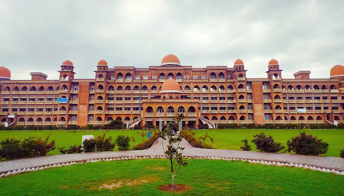

Our Story & Vision
The Khattak Students Association (KSA) at the University of Peshawar was established by dedicated student groups originating from Karak. Driven by the core values of mutual help, community empowerment, and academic collaboration, KSA serves as a vital support system for students navigating university and hostel life far from home.
Our vision is to cultivate an inclusive, highly motivating environment where every student from our region can thrive academically, grow socially, and access timely financial or medical aid when facing emergencies on campus.
From organizing targeted academic study circles to managing robust round-the-clock emergency blood donation drives across local hospitals, KSA is deeply committed to building bridges of welfare, professional mentorship, and lifelong unity.
